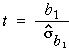

If you don't want to print now,
Distribution of the least squares slope and intercept
The least squares line varies from sample to sample — it is random.
The least squares estimates b0 and b1 of the two linear model parameters β0 and β1 therefore also vary from sample to sample and have normal distributions that are centered on β0 and β1 respectively.

Standard error of slope
When b1 is used as an estimate of β1, the estimation error has a normal distribution,
error in estimate of β1 = (b1 − β1) ~ normal ( 0, σb1 )
This standard deviation is the standard error of the estimate,

where sx is the standard deviation of X. Since σ is unknown, we must replace it with an estimate from the data to obtain a numerical value for the standard error,

Example

The estimated error distribution gives in indication of how close our least squares estimate, b1 = 9.27, is likely to be to the population regression slope, β1.
Confidence interval for the slope
When the least squares slope, b1, is used to estimate β1, the error has a normal distribution,
error in estimate of β1 = (b1 − β1) ~ normal ( 0, σb1 )
This suggests a 95% confidence interval of the form

In practice, we must replace σ in the formula for the standard error with an estimate (based on the sum of squared residuals),

so the constant 1.96 must be replaced by a larger value from the t distribution with (n - 2) degrees of freedom.
A 95% confidence interval for the slope is

Most statistical software will evaluate b1 and its standard error for you when you fit a normal linear model, so it is fairly easy to evaluate the confidence interval in practice — you will not need to use any of the formulae above!
Example
For the example on the previous page, the least squares estimate of the slope and its standard error were:
b1 = 9.27, se (b1) = 1.42
Since there were n = 9 data points, tn − 2 = t7 = 2.365, so a 95% confidence interval for the slope is

We are 95% confident that the expected number of deaths per 100,000 is between 5.9 and 12.6 higher for each unit increase in the exposure index.
Properties of 95% confidence interval
Since a confidence interval for the slope, β1, is evaluated from random sample data, it will vary from sample to sample. In 95% of such samples, the 95% confidence interval will include the true population slope, but in 5% of samples it will not.
We cannot tell whether or not our single data set is one of the 'lucky' ones.
Simulation
What affects the accuracy of the least squares slope?
The standard deviation of b1 (its standard error) is

where
The standard error of b1 is lowest when:
Implications for experimental design
To get the most accurate estimate of the slope from experimental data,
However if the spread of x-values is increased too much, the relationship may not be sufficiently linear for a linear model to be used.

Nonlinearity is a major problem, so it is important to be able to assess whether a relationship is linear. Don't just collect data at the ends of the 'acceptable' range of x-values, even though this maximises sx.

Does the response depend on X?
In a normal linear model, the response has a distribution whose mean, µy, depends linearly on the explanatory variable,
Y ~ normal (μy , σ)
If the slope parameter, β1, is zero, then the response has a normal distribution that does not depend on X.
Y ~ normal (β0 , σ)
This can be tested formally with a hypothesis test for whether β1 is zero.
Testing for zero slope
To assess whether the explanatory variable affects the response, we test the hypotheses
H0 : β1 = 0
HA : β1 ≠ 0
The test is based on how far the least squares slope, b1, is from zero. To assess this, we must take into account its standard deviation (standard error),

If we knew the value of σ, we could standardise b1 to get a test statistic,
| standardised value, |
|---|
If β1 was really zero (H0), the probability of getting a least squares slope as far from zero as that recorded would be the p-value,

Unfortunately σ is usually unknown and the standard deviation of b1 must be estimated from the sample data. We therefore use a test statistic of the form
| t ratio, |  |
|---|
and refer to a t distribution with n - 2 degrees of freedom to find the p-value.

The p-value is interpreted in the same way as for other hypothesis tests — a p-value close to zero means that the sample slope is far enough from zero to be inconsistent with H0: β1 = 0.
Examples

Strength of relationship vs strength of evidence for relationship
It is important to distinguish between the correlation coefficient, r, and the p-value for testing whether there is a relationship between X and Y.
It is important not to confuse these two values when interpreting the p-value for a test.
This is partly explained by an alternative formula for the test statistic,

The test statistic and the p-value therefore both depend on both r and the sample size, n. Increasing n and increasing r both result in a lower p-value.

Properties of p-value
P-values for testing whether a linear model's slope is zero have the same properties as p-values for other hypothesis tests. In particular,
When Y and X are not related (β1 = 0), it is still possible to get small p-values, suggesting that β1 is not zero. However there is only probability 0.01 of getting a p-value as low as 0.01 — it is unlikely but possible. Such a p-value is more likely if the variables are related so we interpret it as giving strong evidence of a relationship.
A normal linear model provides a response distribution for all X. With estimates for all three model parameters, we can obtain the approximate response distribution at any x-value, even if we have no data at that x-value.

What affects the accuracy of a prediction?
The predicted response at X is
 = b0 + b1 x
= b0 + b1 x
and has a normal distribution with mean
μy = β0 + β1x
Its standard deviation depends on the value x at which the prediction
is being made. The further x is from
its mean in the training data,  ,
the greater the variability in the prediction.
,
the greater the variability in the prediction.
Simulation
The effect of the x-value on the variability of the predicted response can be shown using least squares lines fitted to simulated data:

The diagram below shows two theoretical distributions from the above model. (The spread would be even greater for predicting at x = 10.)

Estimating the mean response
In some situations, we are interested in estimating the mean response at some x-value,
μy = β0 + β1x
The least squares estimate,
 = b0 + b1 x
= b0 + b1 x
becomes increasingly accurate as the sample size increases (since b0 and b1 become more accurate estimates of β0 and β1).
Predicting a single item's response
To predict the response for a single new individual with a known x-value, the same prediction would be used,
 = b0 + b1 x
= b0 + b1 x
However no matter how accurately we estimate the mean response for such individuals, a single new individual's response will have a distribution with standard deviation σ around this mean and we have no information to help us predict how far it will be from its mean. The prediction error cannot have a standard deviation that is less than σ.
The error in predicting an individual's response is usually greater than the error in estimating the mean response.
Simulation
The diagram below contrasts estimation of the mean response and prediction of a new individual's response at x = 5.5. Least squares lines have been fitted to several simulated data sets, one of which is shown on the left. The two kinds of errors from the simulations are shown on the right, showing that the prediction errors are usually greater.

The same value,
| = b0 + b1 x |
is used both to estimate the mean response at x and to predict a new individual's response at x, but the errors are different in the two situations — they tend to be larger for predicting a new value.
95% confidence interval for mean response

A formula for the standard error on the right exists, but you should rely on statistical software to find its value.
95% prediction interval for a new individual's response
For prediction, a similar interval is used:

where k is greater than the corresponding standard error for the confidence interval. Statistical software should again be used to find its value.
Example
The diagram below shows 95% confidence intervals for the mean response at x and 95% prediction intervals for a new response at x as bands for a small data set with n = 7 values.

Extrapolation
These 95% confidence intervals and 95% prediction intervals are valid within the range of x-values about which we have collected data, but they should not be relied on for extrapolation. Both intervals assume that the normal linear model describes the process, but we have no information about linearity beyond the x-values that have been collected.